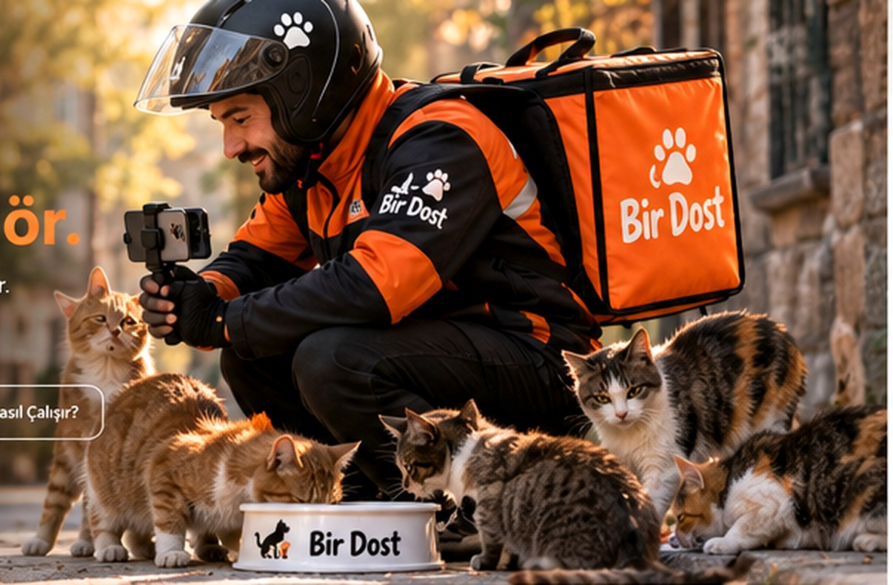
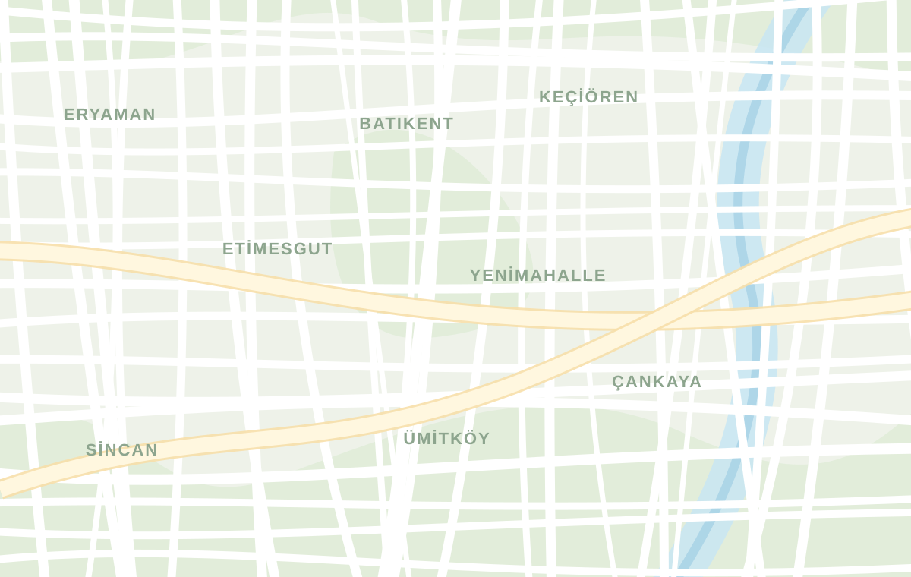
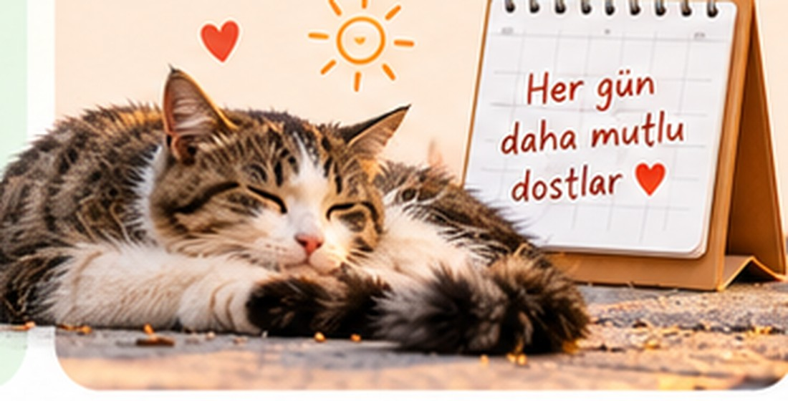

📍
Bir nokta seç
Haritadan mahalleyi veya mama bırakılacak noktayı belirle.
Sokaktaki dostlarımız için mama sipariş et. Biz seçtiğin noktaya ulaştıralım, teslimat videosunu seninle paylaşalım. Her iyilik gerçek bir hikâyeye dönüşsün.

Mahalleni seç, dostların ihtiyaç duyduğu mama paketini belirle. Gerisi bizde!

Dört küçük adımda sokaktaki dostlarımızın günü güzelleşir.
Haritadan mahalleyi veya mama bırakılacak noktayı belirle.
Paketini belirle, tek seferlik veya düzenli destek planla.
Dostlarımıza mamaları bırakalım, teslimatı kayıt altına alalım.
Teslimat videosunu hesabından gör, dilersen paylaş.
Bir mama paketinin nasıl kocaman bir mutluluğa dönüştüğünü düşün.
Her sipariş için paylaşılabilir bir teslimat kaydı hedefliyoruz. Herkes iyiliğinin ulaştığı yeri görebilsin.

Her günHer gün, üç günde bir, haftalık veya aylık… Sen ne sıklıkta destek olmak istersen, seçtiğin bölgedeki dostlara o düzenle mama ulaştırmayı planlayalım.
Kurumsal desteklerle daha fazla sokakta, daha fazla dostun yanındayız.
Belirlenen bir bölgeye düzenli mama desteği, markana özel teslimat raporları.
İşletme ve kampüslerde, marka katılımıyla sürdürülebilir dostluk noktaları.
Çalışanların veya müşterilerin dahil olduğu ortak iyilik kampanyaları.
Kurye ağları ve sipariş platformlarıyla entegrasyon; Getir, Yemeksepeti gibi dağıtım ekosistemleri için potansiyel bir sosyal etki çözümü.
Bu markalarla mevcut ortaklık veya satın alma görüşmesi olduğu anlamına gelmez.Destek veren, siparişinin ulaştığı noktayı videoyla görür.
Her teslimat bir teşekkür ve paylaşılabilir iyilik hikâyesidir.
Düzenli destek, bir defalık iyiliği alışkanlığa dönüştürür.
Yeni mahallelere ve iş birliklerine uyarlanabilir bir yapı.